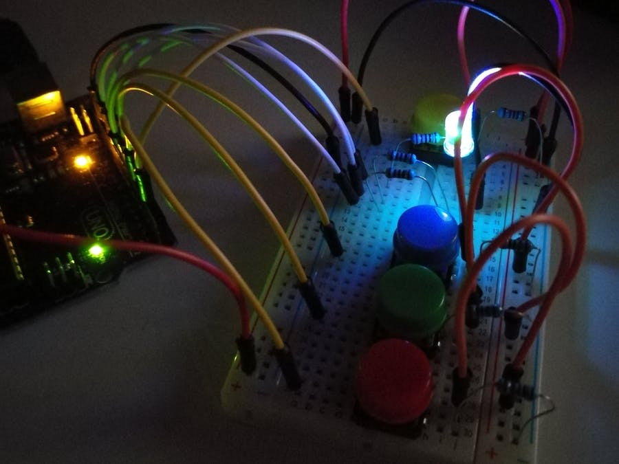
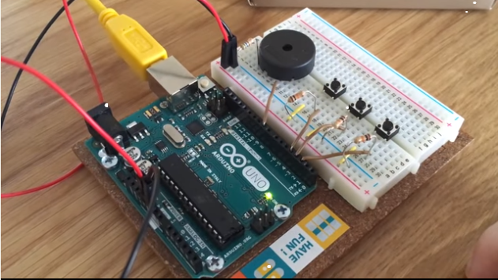

Op deze pagina vind je twee kleine leuke opdrachtjes die je zelf thuis kan doen met een arduino.
Opdracht 1: RGB LED Button Controller |
|
|---|---|
|
In deze Opdracht ga je leren hoe je door middel van op een knop te drukken een LED lampje een specifieke kleur laat branden.
|
 |
Opdracht 2: ToneKeyboard |
|
|---|---|
|  |
In deze opdracht ga je leren hoe je door middel van op een knop te drukken een speaker een specifieke geluidje laten afspelen.
|